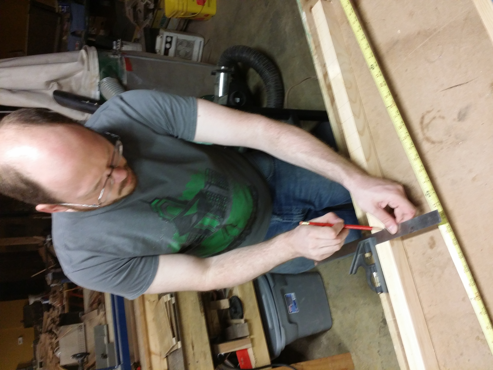
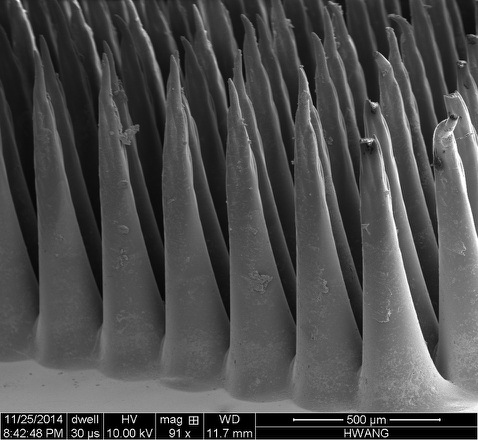

tim revision 2103


bio
Timothy Schmidt has an extensive background in electronic systems diagnostics and repair and has innovated within Open Hardware and desktop fabrication movements for over twenty years. Tim maintained the first version of the Mendel 3D printer in a Free Software CAD system, and founded the Michigan RepRap Users Group. Tim co-founded the Open Graphics Project, and participated in development of the first Open Hardware phones via OpenMoko. Tim has helped to 3D print human stem cells with lasers and consulted on the development of the 3D printer aboard the international space station. As partner in mUVe3D he helps produce the industry's most open and flexible SLA liquid resin 3D printers. Tim has co-founded and aided in the development of several community and maker spaces. For the last six years Tim has served as the Information Technologist of the BEACON Center for the Study of Evolution in Action at Michigan State University.
projects
publications
acknowledgements
presentations
books
quotes
"If it can't be reduced, reused, repaired, rebuilt, refurbished, refinished, resold, recycled or composted then it should be restricted, redesigned or removed from production" - Pete Seeger
"Most of my life was spent in trying to figure out how to do a $50.00 project for 50 cents, and the remainder of my time was spent in trying to scrounge up the 50 cents." - Dave Gingery
"The reasonable man adapts himself to the world: the unreasonable one persists in trying to adapt the world to himself. Therefore all progress depends on the unreasonable man." - George Bernard Shaw, Man and Superman
contact
timschmidt at gmail
__notoc__